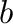
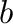

While the calculations are running, you can check on the status of the best cluster
expansion obtained so far. The file log.out contains a brief description of the
status of the calculations, such as the accuracy of the cluster expansion and various
warning messages. Most of the messages pertains to the accurate prediction
of the so-called ground states of the alloy system. The ground states, which are the structures that
have the lowest energy for each given concentration, are extremely important to predict accurately
because they determine which phases will appear on the phase diagram.
The four possible messages are described below.
- Not enough known energies to fit CE.
Before displaying any results, maps waits until enough structural energies are known
to fit a minimal cluster expansion containing only nearest-neighbor pair interactions
and test its accuracy. Thus, the first cluster expansion is typically constructed
after at least 4 structural energies have been computed (this number may vary as a function
of the symmetry of the lattice).
- Among structures of known energy, true ground states differ from fitted ground
states.
The current cluster expansion incorrectly predicts which structures have the lowest
energy for given concentrations, among structures whose first-principles energy is known.
The code has built-in checks to avoid this.
However, in rare instances, it may be mathematically impossible to satisfy all the constraints
that the code imposes for a cluster expansion to be acceptable.
This problem becomes increasingly unlikely as the number of calculated structural energies increases,
so the user should just wait until the problem fixes itself.
- Among structures of known energy, true and predicted ground states agree.
Opposite of the previous message. When this message is displayed, maps also displays either one of
the following two messages.
- New ground states of volume less or equal to
 predicted, see predstr.out.
This indicates that the cluster expansion predicts that, at some concentration, there exist other structures
that should have an energy even lower than the one of the structures whose energy has been calculated
from first principles. In this case, maps
will investigate the matter by generating those structures and requesting that their energy be
calculated. Once again, the user should just wait for the problem to fix itself.
The predicted ground states are flagged by a g in the predstr.out file, so
that you can display their energy by typing
predicted, see predstr.out.
This indicates that the cluster expansion predicts that, at some concentration, there exist other structures
that should have an energy even lower than the one of the structures whose energy has been calculated
from first principles. In this case, maps
will investigate the matter by generating those structures and requesting that their energy be
calculated. Once again, the user should just wait for the problem to fix itself.
The predicted ground states are flagged by a g in the predstr.out file, so
that you can display their energy by typing
- No other ground states of atoms/unit cell or less exist.
The energies of all ground states predicted by the cluster expansion have been confirmed by first-principles calculations. Because it can be computationally intensive to perform a full
ground state search when interactions extend beyond the nearest-neighbor shell [6], maps uses a search algorithm that merely enumerates every possible
structures having atoms or less per unit cell and uses the cluster expansion to predict their energies. The upper limit increases automatically as calculations
progress.
The log.out file also contains two other pieces of information:
The maps code also outputs quantitative data in various output files. The simplest
way to analyze this data is by typing
As illustrated in Figure 5.2, this command displays, in turn
- The log.out file described earlier.
- The formation energy of all structures whose energy is known from first-principles calculations,
as well as the predicted energy of all structures maps has in memory. The convex hull of the ground states among structures of known energy is overlaid
while the new predicted ground states (if any) are marked by an “”.
(Note that this ground state line is only meaningful if the log.out file contains “Among structures of known energy, true and predicted ground states agree.”)
- The formation energy of all structures calculated from first principles and associated ground state line.
- A plot of the magnitude of the Effective Cluster Interactions (ECI) as a function of the diameter of their associated cluster (defined as the
maximum distance between any two sites in the cluster). Pairs, triplets, etc. are plotted
consecutively. This plot is useful to assess the convergence of the cluster expansion.
When the magnitude of the ECI for the larger clusters has clearly decayed to a negligible value
(relative to the nearest-neighbor pair ECI), this is indicative of a well-converged
cluster expansion.
- A plot of the residuals of the fit (i.e. the fitting error) for each structure. This
information is useful to locate potential problems in the first-principles calculations.
Indeed, when first-principles calculations exhibit numerical problems, this typically results in calculated energies that are poorly reproduced by the cluster expansion.
Figure 5.2:
Output of the maps Code, as reported by the mapsrep command.
a) Energies predicted from the cluster expansion as a function of composition for each structure generated.
“known str” denotes structures whose energy has been calculated from first principles.
“known gs” indicate the ground states that have so far been confirmed by first-principles calculations and the dashed line
outlines the convex hull of the ground states, which serves as a threshold to detect other candidate ground states.
“predicted” denotes structures whose energy has not yet been calculated from first principles.
“predicted gs” are structures that are predicted by the cluster expansion to be ground states, although this prediction has not yet been confirmed
by first-principles calculations.
b) Energies calculated from first principles. “known str” and “known gs” are as in a), except that the energy calculated from first principles is reported.
c) Effective Cluster Interaction (ECI) as a function of the diameter of the associated cluster and as a function of the number of sites in the cluster (i.e. pair, triplet, etc.).
d) Residuals of the fit, that is, the difference between the first-principles energies and the energies predicted from the cluster expansion. (The abscissa refers
to the line number within the output file fit.out listing all the structures with known energies.)
|
|
When the user is satisfied with the results (which are constantly updated),
maps can be stopped by creating a file called stop in the current directory
using the command:
while the job dispatching system can be stopped by typing:
A cluster expansion can be considered satisfactory when
- All ground states are correctly reproduced and no new ground states are predicted.
(The log.out file would then indicate that Among structures of known energy, true and predicted ground states agree. No other ground states of atoms/unit cell or less exist.)
- The crossvalidation score, as given in the log.out file, is small (typically less than 0.025 eV).
- Optionally, it is instructive to verify that the magnitude of the ECI decays as a function of the diameter of the corresponding cluster and as a function of the number
of sites it contains.
avdw@alum.mit.edu Wed, Dec 6, 2023 12:55:16 PM
 ,] This displays the user-selected range of concentration over which ground state checking is performed (which can be specified as a command-line option of the maps command:
-c0=
,] This displays the user-selected range of concentration over which ground state checking is performed (which can be specified as a command-line option of the maps command:
-c0= . This provides the predictive power of the cluster
expansion. It is analogous to the root mean square error, except that it is specifically
designed to estimate the error made in predicting the energy for structures not included
in the least-squares fit [24]. It is defined as
. This provides the predictive power of the cluster
expansion. It is analogous to the root mean square error, except that it is specifically
designed to estimate the error made in predicting the energy for structures not included
in the least-squares fit [24]. It is defined as
 , while
is the predicted value of the energy of structure
, while
is the predicted value of the energy of structure